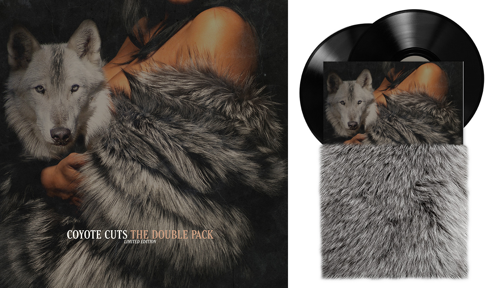
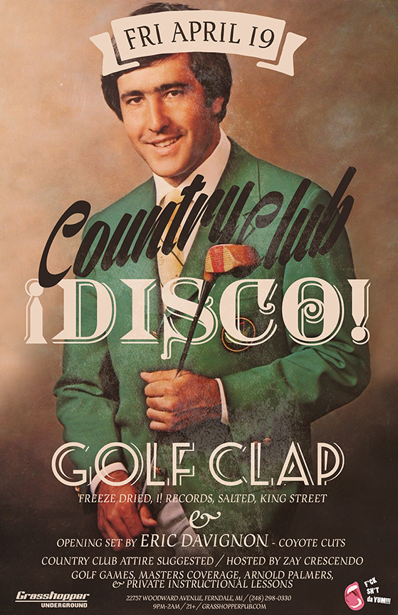
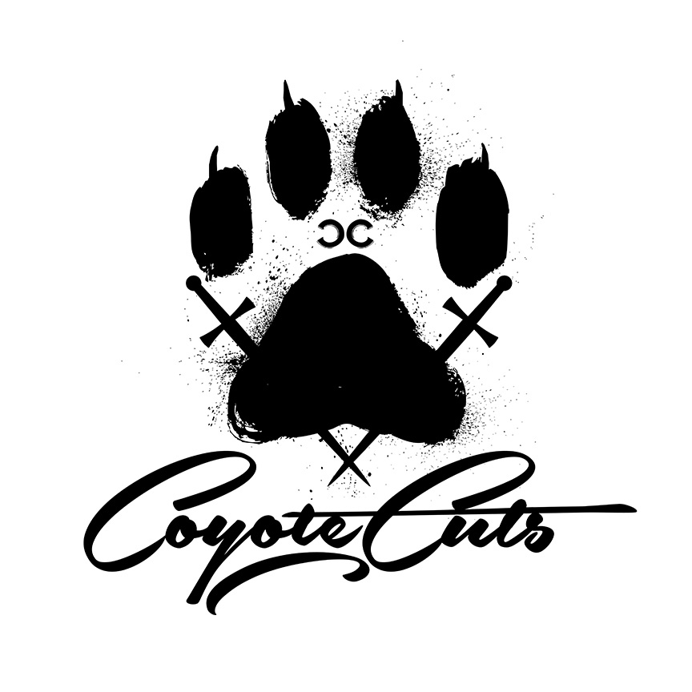
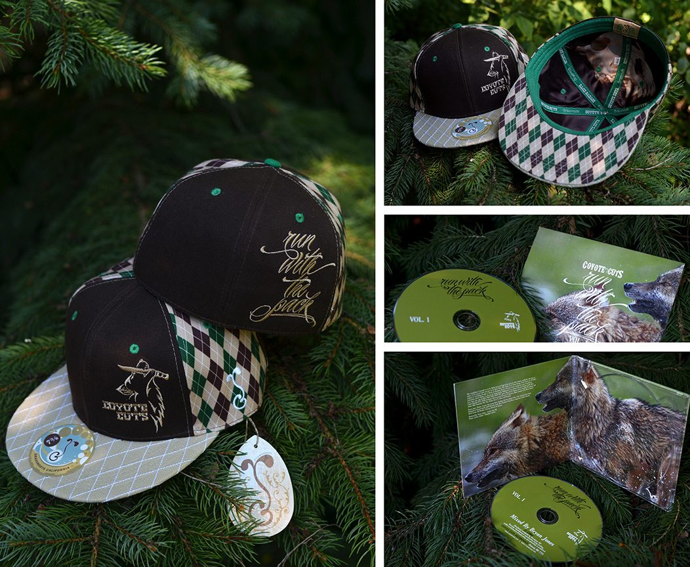
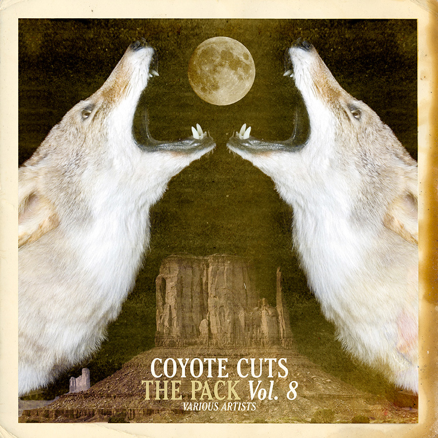

<div class="w-arrows">
    <div class="btn-prev"></div>
    <div class="close"></div>
    <div class="btn-next"></div>
</div>

<div class="img-project">
    <div class="nav-wrapper">
        <div class="nav-work">
            <div class="w-prev"></div>
            <div class="w-next"></div>
        </div>
        <div class="wrapper-project">
            <ul>
                <li></li>
                <li></li>
                <li></li>
                <li></li>
                <li></li>

            </ul>
        </div>
        <div class="controller-3">
            <ul>
            </ul>
        </div>
    </div>
    <div class="clear"></div>
    <div class="info-project">
        <div class="tag-project">Branding</div>
        <div class="title-project">Coyote Cuts</div>
        <div class="spacer"></div>
        <div class="description">Coyote Cuts has quickly risen through the ranks of the underground dance music scene to take their place center stage. These guys are so covered in cool they shed more swag then most people grow in a lifetime. </div>
    </div>
</div>
<div class="clear"></div>
<div class="w-arrows last">
    <div class="btn-prev"></div>
    <div class="close"></div>
    <div class="btn-next"></div>
</div>